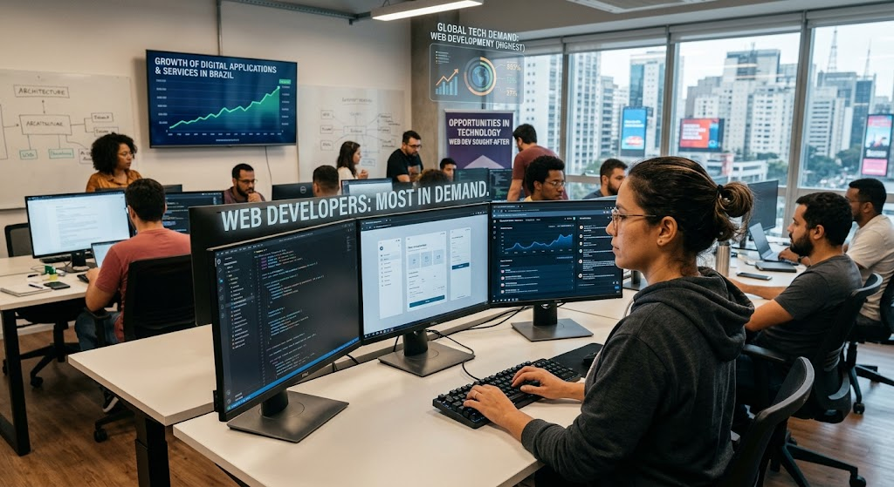

Inteligência Artificial transforma o mercado de tecnologia
Novas ferramentas baseadas em Inteligência Artificial estão modificando a maneira como empresas desenvolvem sistemas, analisam dados e automatizam atividades.
Novas ferramentas baseadas em Inteligência Artificial estão modificando a maneira como empresas desenvolvem sistemas, analisam dados e automatizam atividades.
O crescimento de aplicações e serviços digitais mantém profissionais de desenvolvimento web entre os mais procurados pelo mercado de tecnologia.

Leia MaisEmpresas estão aumentando seus investimentos em segurança digital para proteger aplicações, informações e usuários contra diferentes tipos de ameaças.
Para iniciar no desenvolvimento Front-End é importante construir uma base sólida antes de utilizar frameworks e bibliotecas.
Data:
Introdução ao desenvolvimento de páginas utilizando HTML5.
Data:
Discussão sobre aplicações e oportunidades profissionais relacionadas à Inteligência Artificial.
Data:
Debate sobre segurança digital, ataques cibernéticos e proteção de sistemas.
O TechNews Faculdade foi desenvolvido para compartilhar informações relacionadas à tecnologia, inovação, desenvolvimento de software e mercado de trabalho.